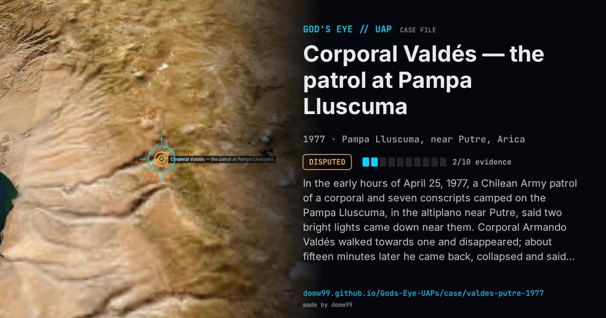

Corporal Valdés — the patrol at Pampa Lluscuma

In the early hours of April 25, 1977, a Chilean Army patrol of a corporal and seven conscripts camped on the Pampa Lluscuma, in the altiplano near Putre, said two bright lights came down near them. Corporal Armando Valdés walked towards one and disappeared; about fifteen minutes later he came back, collapsed and said, “You don’t know who we are or where we come from, but I assure you we will return.” The soldiers said his face now carried several days’ beard and his digital watch showed a date five days ahead. The story reached the press across the world, from Chilean papers to French ones, and became Chile’s best-known UFO case. It was never investigated under the military government: no statement was taken officially and the watch was neither photographed nor studied. Later reporting found that the group was guarding army horses rather than patrolling, and some soldiers said Valdés had a beard before that night. Valdés has given contradictory accounts since, at times calling it a prank that got out of hand.
Explanation
Valdés himself said in later interviews (reported for 2004, 2009 and 2013) that it was a joke among the patrol that got out of hand, with the watch set forward and the beard explained away to avoid punishment for not shaving, though at other times he has said it happened. The army never investigated and the watch was never examined.
What was seen
Shape: Bright violet lights descending from the sky
Witnesses: Corporal Armando Valdés Garrido and seven conscripts of a Chilean Army patrol
Duration: About 15 minutes (Valdés’s absence)
Sources
- The Clinic — the supposed UFO sightings in Chile (2012)
- Diario Uno — the controversial Chilean case that still raises doubts
Browse
- Chile
- 1970s
- Disputed
- Close encounters
- Many independent witnesses
- Military witnesses
- Lights and fireballs